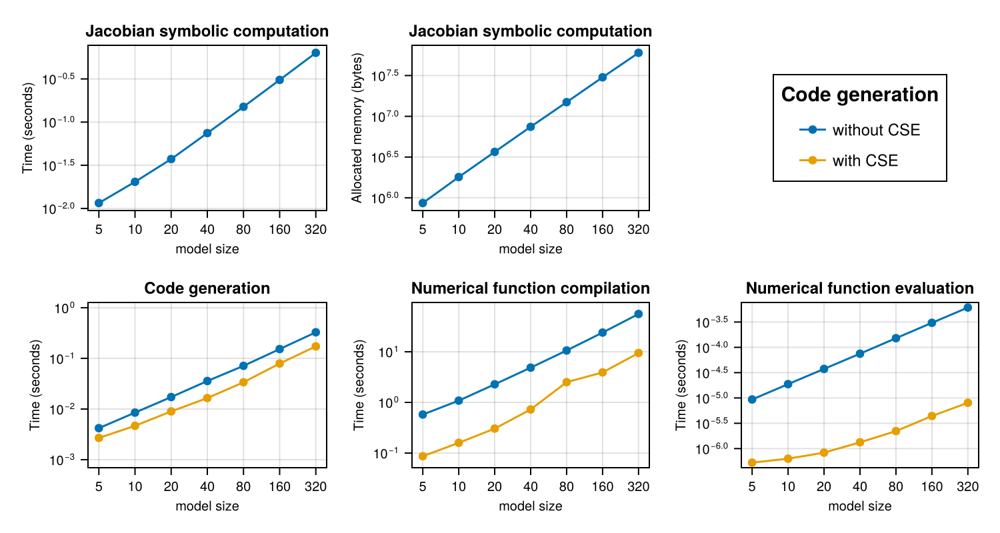

Thermal Fluid Symbolic Jacobian Scaling
This is a 1D advection-diffusion-source PDE that uses a second order upwind scheme.
using Pkg
# Rev fixes precompilation https://github.com/hzgzh/XSteam.jl/pull/2
Pkg.add(Pkg.PackageSpec(;name="XSteam", rev="f2a1c589054cfd6bba307985a3a534b6f5a1863b"))
using ModelingToolkit, Symbolics, SymbolicUtils, XSteam, Polynomials, CairoMakie, PrettyTables
using SparseArrays, Chairmarks, Statistics
using ModelingToolkit: t_nounits as t, D_nounits as D
using SymbolicIndexingInterface: default_valuesSetup Julia Code
# o o o o o o o < heat capacitors
# | | | | | | | < heat conductors
# o o o o o o o
# | | | | | | |
#Source -> o--o--o--o--o--o--o -> Sink
# advection diff source PDE
m_flow_source(t) = 2.75
T_source(t) = (t > 12 * 3600) * 56.0 + 12.0
# @register_symbolic m_flow_source(t)
# @register_symbolic T_source(t)
#build polynomial liquid-water property only dependent on Temperature
p_l = 5 #bar
T_vec = collect(1:1:150);
@generated kin_visc_T(t) = :(Base.evalpoly(t, $(fit(T_vec, my_pT.(p_l, T_vec) ./ rho_pT.(p_l, T_vec), 5).coeffs...,)))
@generated lambda_T(t) = :(Base.evalpoly(t, $(fit(T_vec, tc_pT.(p_l, T_vec), 3).coeffs...,)))
@generated Pr_T(t) = :(Base.evalpoly(t, $(fit(T_vec, 1e3 * Cp_pT.(p_l, T_vec) .* my_pT.(p_l, T_vec) ./ tc_pT.(p_l, T_vec), 5).coeffs...,)))
@generated rho_T(t) = :(Base.evalpoly(t, $(fit(T_vec, rho_pT.(p_l, T_vec), 4).coeffs...,)))
@generated rhocp_T(t) = :(Base.evalpoly(t, $(fit(T_vec, 1000 * rho_pT.(p_l, T_vec) .* Cp_pT.(p_l, T_vec), 5).coeffs...,)))
# @register_symbolic kin_visc_T(t)
# @register_symbolic lambda_T(t)
# @register_symbolic Pr_T(t)
# @register_symbolic rho_T(t)
# @register_symbolic rhocp_T(t)
@connector function FluidPort(; name, p=101325.0, m=0.0, T=0.0)
sts = @variables p(t) = p m(t) = m [connect = Flow] T(t) = T [connect = Stream]
ODESystem(Equation[], t, sts, []; name=name)
end
@connector function VectorHeatPort(; name, N=100, T0=0.0, Q0=0.0)
sts = @variables (T(t))[1:N] = fill(T0, N) (Q(t))[1:N] = fill(Q0, N) [connect = Flow]
ODESystem(Equation[], t, [T; Q], []; name=name)
end
@register_symbolic Dxx_coeff(u, d, T)
#Taylor-aris dispersion model
function Dxx_coeff(u, d, T)
Re = abs(u) * d / kin_visc_T(T) + 0.1
if Re < 1000.0
(d^2 / 4) * u^2 / 48 / 0.14e-6
else
d * u * (1.17e9 * Re^(-2.5) + 0.41)
end
end
@register_symbolic Nusselt(Re, Pr, f)
#Nusselt number model
function Nusselt(Re, Pr, f)
if Re <= 2300.0
3.66
elseif Re <= 3100.0
3.5239 * (Re / 1000)^4 - 45.158 * (Re / 1000)^3 + 212.13 * (Re / 1000)^2 - 427.45 * (Re / 1000) + 316.08
else
f / 8 * ((Re - 1000) * Pr) / (1 + 12.7 * (f / 8)^(1 / 2) * (Pr^(2 / 3) - 1))
end
end
# @register_symbolic Churchill_f(Re, epsilon, d)
#Darcy weisbach friction factor
function Churchill_f(Re, epsilon, d)
theta_1 = (-2.457 * log(((7 / Re)^0.9) + (0.27 * (epsilon / d))))^16
theta_2 = (37530 / Re)^16
8 * ((((8 / Re)^12) + (1 / ((theta_1 + theta_2)^1.5)))^(1 / 12))
end
function FluidRegion(; name, L=1.0, dn=0.05, N=100, T0=0.0,
lumped_T=50, diffusion=true, e=1e-4)
@named inlet = FluidPort()
@named outlet = FluidPort()
@named heatport = VectorHeatPort(N=N)
dx = L / N
c = [-1 / 8, -3 / 8, -3 / 8] # advection stencil coefficients
A = pi * dn^2 / 4
p = @parameters C_shift = 0.0 Rw = 0.0 # stuff for latter
@variables begin
(T(t))[1:N] = fill(T0, N)
Twall(t)[1:N] = fill(T0, N)
(S(t))[1:N] = fill(T0, N)
(C(t))[1:N] = fill(1.0, N)
u(t) = 1e-6
Re(t) = 1000.0
Dxx(t) = 0.0
Pr(t) = 1.0
alpha(t) = 1.0
f(t) = 1.0
end
sts = vcat(T, Twall, S, C, Num[u], Num[Re], Num[Dxx], Num[Pr], Num[alpha], Num[f])
eqs = Equation[
Re ~ 0.1 + dn * abs(u) / kin_visc_T(lumped_T)
Pr ~ Pr_T(lumped_T)
f ~ Churchill_f(Re, e, dn) #Darcy-weisbach
alpha ~ Nusselt(Re, Pr, f) * lambda_T(lumped_T) / dn
Dxx ~ diffusion * Dxx_coeff(u, dn, lumped_T)
inlet.m ~ -outlet.m
inlet.p ~ outlet.p
inlet.T ~ instream(inlet.T)
outlet.T ~ T[N]
u ~ inlet.m / rho_T(inlet.T) / A
[C[i] ~ dx * A * rhocp_T(T[i]) for i in 1:N]
[S[i] ~ heatport.Q[i] for i in 1:N]
[Twall[i] ~ heatport.T[i] for i in 1:N]
#source term
[S[i] ~ (1 / (1 / (alpha * dn * pi * dx) + abs(Rw / 1000))) * (Twall[i] - T[i]) for i in 1:N]
#second order upwind + diffusion + source
D(T[1]) ~ u / dx * (inlet.T - T[1]) + Dxx * (T[2] - T[1]) / dx^2 + S[1] / (C[1] - C_shift)
D(T[2]) ~ u / dx * (c[1] * inlet.T - sum(c) * T[1] + c[2] * T[2] + c[3] * T[3]) + Dxx * (T[1] - 2 * T[2] + T[3]) / dx^2 + S[2] / (C[2] - C_shift)
[D(T[i]) ~ u / dx * (c[1] * T[i-2] - sum(c) * T[i-1] + c[2] * T[i] + c[3] * T[i+1]) + Dxx * (T[i-1] - 2 * T[i] + T[i+1]) / dx^2 + S[i] / (C[i] - C_shift) for i in 3:N-1]
D(T[N]) ~ u / dx * (T[N-1] - T[N]) + Dxx * (T[N-1] - T[N]) / dx^2 + S[N] / (C[N] - C_shift)
]
ODESystem(eqs, t, sts, p; systems=[inlet, outlet, heatport], name=name)
end
# @register_symbolic Cn_circular_wall_inner(d, D, cp, ρ)
function Cn_circular_wall_inner(d, D, cp, ρ)
C = pi / 4 * (D^2 - d^2) * cp * ρ
return C / 2
end
# @register_symbolic Cn_circular_wall_outer(d, D, cp, ρ)
function Cn_circular_wall_outer(d, D, cp, ρ)
C = pi / 4 * (D^2 - d^2) * cp * ρ
return C / 2
end
# @register_symbolic Ke_circular_wall(d, D, λ)
function Ke_circular_wall(d, D, λ)
2 * pi * λ / log(D / d)
end
function CircularWallFEM(; name, L=100, N=10, d=0.05, t_layer=[0.002],
λ=[50], cp=[500], ρ=[7850], T0=0.0)
@named inner_heatport = VectorHeatPort(N=N)
@named outer_heatport = VectorHeatPort(N=N)
dx = L / N
Ne = length(t_layer)
Nn = Ne + 1
dn = vcat(d, d .+ 2.0 .* cumsum(t_layer))
Cn = zeros(Nn)
Cn[1:Ne] += Cn_circular_wall_inner.(dn[1:Ne], dn[2:Nn], cp, ρ) .* dx
Cn[2:Nn] += Cn_circular_wall_outer.(dn[1:Ne], dn[2:Nn], cp, ρ) .* dx
p = @parameters C_shift = 0.0
Ke = Ke_circular_wall.(dn[1:Ne], dn[2:Nn], λ) .* dx
@variables begin
(Tn(t))[1:N, 1:Nn] = fill(T0, N, Nn)
(Qe(t))[1:N, 1:Ne] = fill(T0, N, Ne)
end
sts = [vec(Tn); vec(Qe)]
e0 = Equation[inner_heatport.T[i] ~ Tn[i, 1] for i in 1:N]
e1 = Equation[outer_heatport.T[i] ~ Tn[i, Nn] for i in 1:N]
e2 = Equation[Qe[i, j] ~ Ke[j] * (-Tn[i, j+1] + Tn[i, j]) for i in 1:N for j in 1:Ne]
e3 = Equation[D(Tn[i, 1]) * (Cn[1] + C_shift) ~ inner_heatport.Q[i] - Qe[i, 1] for i in 1:N]
e4 = Equation[D(Tn[i, j]) * Cn[j] ~ Qe[i, j-1] - Qe[i, j] for i in 1:N for j in 2:Nn-1]
e5 = Equation[D(Tn[i, Nn]) * Cn[Nn] ~ Qe[i, Ne] + outer_heatport.Q[i] for i in 1:N]
eqs = vcat(e0, e1, e2, e3, e4, e5)
ODESystem(eqs, t, sts, p; systems=[inner_heatport, outer_heatport], name=name)
end
function CylindricalSurfaceConvection(; name, L=100, N=100, d=1.0, α=5.0)
dx = L / N
S = pi * d * dx
@named heatport = VectorHeatPort(N=N)
sts = @variables Tenv(t) = 0.0
eqs = [
Tenv ~ 18.0
[heatport.Q[i] ~ α * S * (heatport.T[i] - Tenv) for i in 1:N]
]
ODESystem(eqs, t, sts, []; systems=[heatport], name=name)
end
function PreinsulatedPipe(; name, L=100.0, N=100.0, dn=0.05, T0=0.0, t_layer=[0.004, 0.013],
λ=[50, 0.04], cp=[500, 1200], ρ=[7800, 40], α=5.0,
e=1e-4, lumped_T=50, diffusion=true)
@named inlet = FluidPort()
@named outlet = FluidPort()
@named fluid_region = FluidRegion(L=L, N=N, dn=dn, e=e, lumped_T=lumped_T, diffusion=diffusion)
@named shell = CircularWallFEM(L=L, N=N, d=dn, t_layer=t_layer, λ=λ, cp=cp, ρ=ρ)
@named surfconv = CylindricalSurfaceConvection(L=L, N=N, d=dn + 2.0 * sum(t_layer), α=α)
systems = [fluid_region, shell, inlet, outlet, surfconv]
eqs = [
connect(fluid_region.inlet, inlet)
connect(fluid_region.outlet, outlet)
connect(fluid_region.heatport, shell.inner_heatport)
connect(shell.outer_heatport, surfconv.heatport)
]
ODESystem(eqs, t, [], []; systems=systems, name=name)
end
function Source(; name, p_feed=100000)
@named outlet = FluidPort()
sts = @variables m_flow(t) = 1e-6
eqs = [
m_flow ~ m_flow_source(t)
outlet.m ~ -m_flow
outlet.p ~ p_feed
outlet.T ~ T_source(t)
]
compose(ODESystem(eqs, t, sts, []; name=name), [outlet])
end
function Sink(; name)
@named inlet = FluidPort()
eqs = [
inlet.T ~ instream(inlet.T)
]
compose(ODESystem(eqs, t, [], []; name=name), [inlet])
end
function TestBenchPreinsulated(; name, L=1.0, dn=0.05, t_layer=[0.0056, 0.013], N=100, diffusion=true, lumped_T=20)
@named pipe = PreinsulatedPipe(L=L, dn=dn, N=N, diffusion=diffusion, t_layer=t_layer, lumped_T=lumped_T)
@named source = Source()
@named sink = Sink()
subs = [source, pipe, sink]
eqs = [
connect(source.outlet, pipe.inlet)
connect(pipe.outlet, sink.inlet)
]
compose(ODESystem(eqs, t, [], []; name=name), subs)
end
function call(fn, args...)
fn(args...)
endcall (generic function with 1 method)The sparsejacobian function in Symbolics.jl is optimized for hashconsing and caching, and as such performs very poorly without either of those features. We use the old implementation, optimized without hashconsing, to benchmark performance without hashconsing and without caching to avoid biasing the results.
include("old_sparse_jacobian.jl")
function run_and_time_construction!(jacobian_times, jacobian_gctimes, jacobian_allocs, build_times, functions, i, N)
@mtkbuild sys = TestBenchPreinsulated(L=470, N=N, dn=0.3127, t_layer=[0.0056, 0.058])
rhs = [eq.rhs for eq in full_equations(sys)]
dvs = unknowns(sys)
@info "Built system"
SymbolicUtils.ENABLE_HASHCONSING[] = false
jac_result = @be old_sparsejacobian(rhs, dvs)
@info "No hashconsing benchmark"
jac_nocse = old_sparsejacobian(rhs, dvs)
@info "No hashconsing result"
jacobian_times[1][i] = mean(x -> x.time, jac_result.samples)
jacobian_gctimes[1][i] = mean(x -> x.time * x.gc_fraction, jac_result.samples)
jacobian_allocs[1][i] = mean(x -> x.bytes, jac_result.samples)
@info "times" jacobian_times[1][i] jacobian_gctimes[1][i] jacobian_allocs[1][i]
SymbolicUtils.ENABLE_HASHCONSING[] = true
jac_result = @be (Symbolics.clear_derivative_caches!(); Symbolics.sparsejacobian(rhs, dvs))
@info "Hashconsing benchmark"
jac_cse = Symbolics.sparsejacobian(rhs, dvs)
@info "Hashconsing result"
jacobian_times[2][i] = mean(x -> x.time, jac_result.samples)
jacobian_gctimes[2][i] = mean(x -> x.time * x.gc_fraction, jac_result.samples)
jacobian_allocs[2][i] = mean(x -> x.bytes, jac_result.samples)
@info "times" jacobian_times[2][i] jacobian_gctimes[2][i] jacobian_allocs[2][i]
jac = jac_cse
ps = parameters(sys)
defs = default_values(sys)
u0 = Float64[Symbolics.value(Symbolics.fixpoint_sub(v, defs)) for v in dvs]
p = Float64[Symbolics.value(Symbolics.fixpoint_sub(v, defs)) for v in ps]
t0 = 0.0
buffer_nocse = similar(jac, Float64)
buffer_nocse.nzval .= 0.0
buffer_cse = similar(jac, Float64)
buffer_cse.nzval .= 0.0
f_jac_nocse = eval(build_function(jac, dvs, ps, t; iip_config = (false, true), expression = Val{true}, cse = false)[2])
functions[1][i] = let buffer_nocse = buffer_nocse, u0 = u0, p = p, t0 = t0, f_jac_nocse = f_jac_nocse
function nocse()
f_jac_nocse(buffer_nocse, u0, p, t0)
buffer_nocse
end
end
@info "No CSE build_function result"
build_result_nocse = @be build_function(jac, dvs, ps, t; iip_config = (false, true), expression = Val{true}, cse = false)
@info "No CSE build_function benchmark"
build_times[1][i] = mean(x -> x.time, build_result_nocse.samples)
@info "build_function time" build_times[1][i]
f_jac_cse = eval(build_function(jac, dvs, ps, t; iip_config = (false, true), expression = Val{true}, cse = true)[2])
functions[2][i] = let buffer_cse = buffer_cse, u0 = u0, p = p, t0 = t0, f_jac_cse = f_jac_cse
function nocse()
f_jac_cse(buffer_cse, u0, p, t0)
buffer_cse
end
end
@info "CSE build_function result"
build_result_cse = @be build_function(jac, dvs, ps, t; iip_config = (false, true), expression = Val{true}, cse = true)
@info "CSE build_function benchmark"
build_times[2][i] = mean(x -> x.time, build_result_cse.samples)
@info "build_function time" build_times[2][i]
return nothing
end
function run_and_time_call!(functions, first_call_times, second_call_times, i)
fnocse = functions[1][i]
fcse = functions[2][i]
first_call_result_nocse = @timed fnocse()
first_call_times[1][i] = first_call_result_nocse.time
@info "First call time" first_call_times[1][i]
second_call_result_nocse = @be fnocse()
second_call_times[1][i] = mean(x -> x.time, second_call_result_nocse.samples)
@info "Runtime" second_call_times[1][i]
first_call_result_cse = @timed fcse()
first_call_times[2][i] = first_call_result_cse.time
@info "First call time" first_call_times[2][i]
second_call_result_cse = @be fcse()
second_call_times[2][i] = mean(x -> x.time, second_call_result_cse.samples)
@info "Runtime" second_call_times[2][i]
endrun_and_time_call! (generic function with 1 method)N = [5, 10, 20, 40, 80, 160, 320];
jacobian_times = [zeros(Float64, length(N)), zeros(Float64, length(N))]
functions = [Vector{Any}(undef, length(N)), Vector{Any}(undef, length(N))]
jacobian_gctimes = copy.(jacobian_times)
jacobian_allocs = copy.(jacobian_times)
# [without_cse_times, with_cse_times]
build_times = copy.(jacobian_times)
first_call_times = copy.(jacobian_times)
second_call_times = copy.(jacobian_times)2-element Vector{Vector{Float64}}:
[0.0, 0.0, 0.0, 0.0, 0.0, 0.0, 0.0]
[0.0, 0.0, 0.0, 0.0, 0.0, 0.0, 0.0]Timings
Chairmarks.DEFAULTS.seconds = 15.0
# compile
run_and_time_construction!(jacobian_times, jacobian_gctimes, jacobian_allocs, build_times, functions, 1, 5)
run_and_time_call!(functions, first_call_times, second_call_times, 1)
for (i, n) in enumerate(N)
@info i n
@time run_and_time_construction!(jacobian_times, jacobian_gctimes, jacobian_allocs, build_times, functions, i, n)
end
for (i, n) in enumerate(N)
@info i n
run_and_time_call!(functions, first_call_times, second_call_times, i)
end60.272483 seconds (302.00 M allocations: 9.344 GiB, 2.55% gc time, 0.09% c
ompilation time: 100% of which was recompilation)
60.494512 seconds (313.11 M allocations: 9.592 GiB, 2.43% gc time, 0.10% c
ompilation time: 100% of which was recompilation)
61.018238 seconds (323.57 M allocations: 10.074 GiB, 3.43% gc time, 0.11%
compilation time: 99% of which was recompilation)
62.092409 seconds (326.34 M allocations: 9.971 GiB, 3.17% gc time, 0.19% c
ompilation time: 57% of which was recompilation)
64.256937 seconds (333.29 M allocations: 10.102 GiB, 3.32% gc time, 0.11%
compilation time: 91% of which was recompilation)
69.303636 seconds (323.84 M allocations: 9.787 GiB, 3.37% gc time, 0.09% c
ompilation time: 98% of which was recompilation)
78.255485 seconds (343.36 M allocations: 10.349 GiB, 4.18% gc time, 0.11%
compilation time: 70% of which was recompilation)Results
tabledata = hcat(N, jacobian_times..., jacobian_gctimes..., jacobian_allocs..., build_times..., first_call_times..., second_call_times...)
header = ["N", "Jacobian time (no hashconsing)", "Jacobian time (hashconsing)", "Jacobian GC time (no hashconsing)", "Jacobian GC time (hashconsing)", "Jacobian allocated memory (no hashconsing) (B)", "Jacobian allocated memory (hashconsing) (B)", "`build_function` time (no CSE)", "`build_function` time (CSE)", "First call time (no CSE)", "First call time (CSE)", "Second call time (no CSE)", "Second call time (CSE)"]
pretty_table(tabledata; column_labels = header, backend = :html)<table> <thead> <tr class = "columnLabelRow"> <th style = "font-weight: bold; text-align: right;">N</th> <th style = "font-weight: bold; text-align: right;">Jacobian time (no hashconsing)</th> <th style = "font-weight: bold; text-align: right;">Jacobian time (hashconsing)</th> <th style = "font-weight: bold; text-align: right;">Jacobian GC time (no hashconsing)</th> <th style = "font-weight: bold; text-align: right;">Jacobian GC time (hashconsing)</th> <th style = "font-weight: bold; text-align: right;">Jacobian allocated memory (no hashconsing) (B)</th> <th style = "font-weight: bold; text-align: right;">Jacobian allocated memory (hashconsing) (B)</th> <th style = "font-weight: bold; text-align: right;">build_function time (no CSE)</th> <th style = "font-weight: bold; text-align: right;">build_function time (CSE)</th> <th style = "font-weight: bold; text-align: right;">First call time (no CSE)</th> <th style = "font-weight: bold; text-align: right;">First call time (CSE)</th> <th style = "font-weight: bold; text-align: right;">Second call time (no CSE)</th> <th style = "font-weight: bold; text-align: right;">Second call time (CSE)</th> </tr> </thead> <tbody> <tr class = "dataRow"> <td style = "text-align: right;">5.0</td> <td style = "text-align: right;">0.0343451</td> <td style = "text-align: right;">0.0089879</td> <td style = "text-align: right;">0.000789289</td> <td style = "text-align: right;">0.000157535</td> <td style = "text-align: right;">3.18245e6</td> <td style = "text-align: right;">8.73179e5</td> <td style = "text-align: right;">0.00323629</td> <td style = "text-align: right;">0.00197637</td> <td style = "text-align: right;">0.506884</td> <td style = "text-align: right;">0.0722184</td> <td style = "text-align: right;">6.99256e-6</td> <td style = "text-align: right;">4.1235e-7</td> </tr> <tr class = "dataRow"> <td style = "text-align: right;">10.0</td> <td style = "text-align: right;">0.0769121</td> <td style = "text-align: right;">0.0150582</td> <td style = "text-align: right;">0.001376</td> <td style = "text-align: right;">0.000346572</td> <td style = "text-align: right;">6.80315e6</td> <td style = "text-align: right;">1.8191e6</td> <td style = "text-align: right;">0.00664262</td> <td style = "text-align: right;">0.00348956</td> <td style = "text-align: right;">0.774315</td> <td style = "text-align: right;">0.121527</td> <td style = "text-align: right;">1.40265e-5</td> <td style = "text-align: right;">4.76982e-7</td> </tr> <tr class = "dataRow"> <td style = "text-align: right;">20.0</td> <td style = "text-align: right;">0.160086</td> <td style = "text-align: right;">0.0279397</td> <td style = "text-align: right;">0.0028482</td> <td style = "text-align: right;">0.00065181</td> <td style = "text-align: right;">1.40064e7</td> <td style = "text-align: right;">3.71453e6</td> <td style = "text-align: right;">0.0137314</td> <td style = "text-align: right;">0.00611633</td> <td style = "text-align: right;">1.78696</td> <td style = "text-align: right;">0.248181</td> <td style = "text-align: right;">2.8086e-5</td> <td style = "text-align: right;">6.4136e-7</td> </tr> <tr class = "dataRow"> <td style = "text-align: right;">40.0</td> <td style = "text-align: right;">0.327929</td> <td style = "text-align: right;">0.0550039</td> <td style = "text-align: right;">0.0113573</td> <td style = "text-align: right;">0.0017247</td> <td style = "text-align: right;">2.8498e7</td> <td style = "text-align: right;">7.53717e6</td> <td style = "text-align: right;">0.0274562</td> <td style = "text-align: right;">0.0122717</td> <td style = "text-align: right;">3.87703</td> <td style = "text-align: right;">0.585324</td> <td style = "text-align: right;">5.61266e-5</td> <td style = "text-align: right;">9.89831e-7</td> </tr> <tr class = "dataRow"> <td style = "text-align: right;">80.0</td> <td style = "text-align: right;">0.666602</td> <td style = "text-align: right;">0.106978</td> <td style = "text-align: right;">0.0126851</td> <td style = "text-align: right;">0.00253012</td> <td style = "text-align: right;">5.73688e7</td> <td style = "text-align: right;">1.51277e7</td> <td style = "text-align: right;">0.0551345</td> <td style = "text-align: right;">0.0249026</td> <td style = "text-align: right;">8.87293</td> <td style = "text-align: right;">1.45704</td> <td style = "text-align: right;">0.000113499</td> <td style = "text-align: right;">1.68885e-6</td> </tr> <tr class = "dataRow"> <td style = "text-align: right;">160.0</td> <td style = "text-align: right;">1.35333</td> <td style = "text-align: right;">0.224725</td> <td style = "text-align: right;">0.0288453</td> <td style = "text-align: right;">0.00605619</td> <td style = "text-align: right;">1.15243e8</td> <td style = "text-align: right;">3.04632e7</td> <td style = "text-align: right;">0.119402</td> <td style = "text-align: right;">0.0570492</td> <td style = "text-align: right;">19.2308</td> <td style = "text-align: right;">3.07701</td> <td style = "text-align: right;">0.000228441</td> <td style = "text-align: right;">3.13061e-6</td> </tr> <tr class = "dataRow"> <td style = "text-align: right;">320.0</td> <td style = "text-align: right;">2.70821</td> <td style = "text-align: right;">0.463351</td> <td style = "text-align: right;">0.115331</td> <td style = "text-align: right;">0.0143183</td> <td style = "text-align: right;">2.31004e8</td> <td style = "text-align: right;">6.10368e7</td> <td style = "text-align: right;">0.236728</td> <td style = "text-align: right;">0.122386</td> <td style = "text-align: right;">47.9434</td> <td style = "text-align: right;">7.4457</td> <td style = "text-align: right;">0.000457314</td> <td style = "text-align: right;">6.18508e-6</td> </tr> </tbody> </table>
f = Figure(size = (750, 400))
titles = [
"Jacobian symbolic computation", "Jacobian symbolic computation", "Code generation",
"Numerical function compilation", "Numerical function evaluation"]
labels = ["Time (seconds)", "Allocated memory (bytes)",
"Time (seconds)", "Time (seconds)", "Time (seconds)"]
times = [jacobian_times, jacobian_allocs, build_times, first_call_times, second_call_times]
axes = Axis[]
for i in 1:2
label = labels[i]
data = times[i]
ax = Axis(f[1, i], xscale = log10, yscale = log10, xlabel = "model size",
xlabelsize = 10, ylabel = label, ylabelsize = 10, xticks = N,
title = titles[i], titlesize = 12, xticklabelsize = 10, yticklabelsize = 10)
push!(axes, ax)
l1 = scatterlines!(ax, N, data[1], label = "without hashconsing")
l2 = scatterlines!(ax, N, data[2], label = "with hashconsing")
end
Legend(f[1, 3], axes[1], "Methods", tellwidth = false, labelsize = 12, titlesize = 15)
axes2 = Axis[]
# make equal y-axis unit length
mn3, mx3 = extrema(reduce(vcat, times[3]))
xn3 = log10(mx3 / mn3)
mn4, mx4 = extrema(reduce(vcat, times[4]))
xn4 = log10(mx4 / mn4)
mn5, mx5 = extrema(reduce(vcat, times[5]))
xn5 = log10(mx5 / mn5)
xn = max(xn3, xn4, xn5)
xn += 0.2
hxn = xn / 2
hxn3 = (log10(mx3) + log10(mn3)) / 2
hxn4 = (log10(mx4) + log10(mn4)) / 2
hxn5 = (log10(mx5) + log10(mn5)) / 2
ylims = [(exp10(hxn3 - hxn), exp10(hxn3 + hxn)), (exp10(hxn4 - hxn), exp10(hxn4 + hxn)),
(exp10(hxn5 - hxn), exp10(hxn5 + hxn))]
for i in 1:3
ir = i + 2
label = labels[ir]
data = times[ir]
ax = Axis(f[2, i], xscale = log10, yscale = log10, xlabel = "model size",
xlabelsize = 10, ylabel = label, ylabelsize = 10, xticks = N,
title = titles[ir], titlesize = 12, xticklabelsize = 10, yticklabelsize = 10)
ylims!(ax, ylims[i]...)
push!(axes2, ax)
l1 = scatterlines!(ax, N, data[1], label = "without hashconsing")
l2 = scatterlines!(ax, N, data[2], label = "with hashconsing")
end
save("thermal_fluid.pdf", f)
f
Appendix
Appendix
These benchmarks are a part of the SciMLBenchmarks.jl repository, found at: https://github.com/SciML/SciMLBenchmarks.jl. For more information on high-performance scientific machine learning, check out the SciML Open Source Software Organization https://sciml.ai.
To locally run this benchmark, do the following commands:
using SciMLBenchmarks
SciMLBenchmarks.weave_file("benchmarks/Symbolics","ThermalFluid.jmd")Computer Information:
Julia Version 1.12.7
Commit 6d172b025e4 (2026-08-15 08:05 UTC)
Build Info:
Official https://julialang.org release
Platform Info:
OS: Linux (x86_64-linux-gnu)
CPU: 128 × AMD EPYC 7502 32-Core Processor
WORD_SIZE: 64
LLVM: libLLVM-18.1.7 (ORCJIT, znver2)
GC: Built with stock GC
Threads: 128 default, 1 interactive, 128 GC (on 128 virtual cores)
Environment:
JULIA_DEPOT_PATH = /home/crackauc/github-runners/amdci8-1/.julia
JULIA_NUM_THREADS = auto
Package Information:
Status `~/github-runners/amdci8-1/_work/SciMLBenchmarks.jl/SciMLBenchmarks.jl/benchmarks/Symbolics/Project.toml`
[6e4b80f9] BenchmarkTools v1.8.0
[13f3f980] CairoMakie v0.15.13
[479239e8] Catalyst v16.4.0
[0ca39b1e] Chairmarks v1.3.1
[864edb3b] DataStructures v0.19.6
⌃ [7ed4a6bd] LinearSolve v5.14.0
[961ee093] ModelingToolkit v11.40.0
⌅ [bac558e1] OrderedCollections v1.8.2 [loaded: v2.0.1]
[1dea7af3] OrdinaryDiffEq v7.8.1
[91a5bcdd] Plots v1.41.7
[f27b6e38] Polynomials v4.1.1
[08abe8d2] PrettyTables v3.4.8
[b4db0fb7] ReactionNetworkImporters v1.5.0
⌃ [31c91b34] SciMLBenchmarks v0.1.3 [loaded: v0.2.0]
⌃ [10745b16] Statistics v1.11.1
[2efcf032] SymbolicIndexingInterface v0.3.55
⌅ [d1185830] SymbolicUtils v4.45.0
⌃ [0c5d862f] Symbolics v7.38.0
⌅ [a759f4b9] TimerOutputs v0.5.29
[95ff35a0] XSteam v0.3.0 `https://github.com/hzgzh/XSteam.jl.git#f2a1c58`
[37e2e46d] LinearAlgebra v1.12.0
[2f01184e] SparseArrays v1.12.0
Info Packages marked with ⌃ and ⌅ have new versions available. Those with ⌃ may be upgradable, but those with ⌅ are restricted by compatibility constraints from upgrading. To see why use `status --outdated`And the full manifest:
Status `~/github-runners/amdci8-1/_work/SciMLBenchmarks.jl/SciMLBenchmarks.jl/benchmarks/Symbolics/Manifest.toml`
[47edcb42] ADTypes v1.24.0
[14f7f29c] AMD v0.5.3
[621f4979] AbstractFFTs v1.5.0
[6e696c72] AbstractPlutoDingetjes v1.4.0
[1520ce14] AbstractTrees v0.4.5
[7d9f7c33] Accessors v0.1.45
[79e6a3ab] Adapt v4.7.0
[35492f91] AdaptivePredicates v1.2.0
[66dad0bd] AliasTables v1.1.3
[27a7e980] Animations v0.4.2
[ec485272] ArnoldiMethod v0.4.0
⌃ [4fba245c] ArrayInterface v7.30.0
[4c555306] ArrayLayouts v1.12.2
[67c07d97] Automa v1.2.0
[13072b0f] AxisAlgorithms v1.1.0
[39de3d68] AxisArrays v0.4.8
[aae01518] BandedMatrices v1.12.0
[18cc8868] BaseDirs v1.4.0
[6e4b80f9] BenchmarkTools v1.8.0
[e2ed5e7c] Bijections v0.2.2
[b2a6c25c] BinaryHeaps v1.1.0
⌃ [caf10ac8] BipartiteGraphs v0.1.12
[8e7c35d0] BlockArrays v1.10.0
[70df07ce] BracketingNonlinearSolve v1.12.6
[fa961155] CEnum v0.5.0
[96374032] CRlibm v1.0.2
[159f3aea] Cairo v1.1.1
[13f3f980] CairoMakie v0.15.13
[479239e8] Catalyst v16.4.0
[d360d2e6] ChainRulesCore v1.26.1
[0ca39b1e] Chairmarks v1.3.1
[6b39b394] CodecZstd v0.8.7
[a2cac450] ColorBrewer v0.4.2
[35d6a980] ColorSchemes v3.31.0
[3da002f7] ColorTypes v0.12.1
[c3611d14] ColorVectorSpace v0.11.0
[5ae59095] Colors v0.13.1
⌅ [861a8166] Combinatorics v1.0.2
[38540f10] CommonSolve v0.2.14
[bbf7d656] CommonSubexpressions v0.3.1
[f70d9fcc] CommonWorldInvalidations v1.2.0
[34da2185] Compat v4.18.1
[b152e2b5] CompositeTypes v0.1.4
[a33af91c] CompositionsBase v0.1.2
[95dc2771] ComputePipeline v0.1.8
[2569d6c7] ConcreteStructs v0.2.8
[8f4d0f93] Conda v1.10.3
[187b0558] ConstructionBase v1.6.0
[d38c429a] Contour v0.6.3
[b7a15901] CoreMath v0.1.0
[a8cc5b0e] Crayons v4.2.0
[9a962f9c] DataAPI v1.16.0
[864edb3b] DataStructures v0.19.6
[e2d170a0] DataValueInterfaces v1.0.0
[927a84f5] DelaunayTriangulation v1.6.6
[8bb1440f] DelimitedFiles v1.9.1
⌃ [2b5f629d] DiffEqBase v7.18.2
[459566f4] DiffEqCallbacks v4.19.3
[163ba53b] DiffResults v1.1.0
[b552c78f] DiffRules v1.16.0
[a0c0ee7d] DifferentiationInterface v0.7.21
[8d63f2c5] DispatchDoctor v0.4.28
[31c24e10] Distributions v0.25.131
[ffbed154] DocStringExtensions v0.9.5
[5b8099bc] DomainSets v0.8.1
⌃ [7c1d4256] DynamicPolynomials v0.6.7
[06fc5a27] DynamicQuantities v1.13.0
[4e289a0a] EnumX v1.0.7
[f151be2c] EnzymeCore v0.8.21
[429591f6] ExactPredicates v2.2.9
[e2ba6199] ExprTools v0.1.11
[55351af7] ExproniconLite v0.10.14
[c87230d0] FFMPEG v0.4.5
[b86e33f2] FFTA v0.3.1
[7034ab61] FastBroadcast v1.4.0
[9aa1b823] FastClosures v0.3.2
[a4df4552] FastPower v1.5.0
[5789e2e9] FileIO v1.20.0
[8fc22ac5] FilePaths v0.9.0
[48062228] FilePathsBase v0.9.24
[1a297f60] FillArrays v1.17.0
[64ca27bc] FindFirstFunctions v3.2.1
[6a86dc24] FiniteDiff v2.33.0
⌅ [53c48c17] FixedPointNumbers v0.8.6
[1fa38f19] Format v1.3.7
[f6369f11] ForwardDiff v1.4.5
[b38be410] FreeType v4.1.1
[663a7486] FreeTypeAbstraction v0.10.8
[a85aefff] FunctionMaps v0.1.2
[069b7b12] FunctionWrappers v1.1.3
[77dc65aa] FunctionWrappersWrappers v1.13.0
[46192b85] GPUArraysCore v0.2.0
[28b8d3ca] GR v0.73.27
[a0844989] Gamma v1.2.0
⌃ [5c1252a2] GeometryBasics v0.5.11
[d7ba0133] Git v1.5.0
[a2bd30eb] Graphics v1.1.3
[86223c79] Graphs v1.14.0
[3955a311] GridLayoutBase v0.11.2
[42e2da0e] Grisu v1.0.2
⌅ [eafb193a] Highlights v0.5.3
[34004b35] HypergeometricFunctions v0.3.30
[7073ff75] IJulia v1.34.4
[2803e5a7] ImageAxes v0.6.12
[c817782e] ImageBase v0.1.7
[a09fc81d] ImageCore v0.10.5
⌃ [82e4d734] ImageIO v0.6.9
[bc367c6b] ImageMetadata v0.9.10
⌃ [3263718b] ImplicitDiscreteSolve v2.2.0
[9b13fd28] IndirectArrays v1.0.0
[d25df0c9] Inflate v0.1.5
[18e54dd8] IntegerMathUtils v0.1.4
[a98d9a8b] Interpolations v0.16.3
[d1acc4aa] IntervalArithmetic v1.0.11
[8197267c] IntervalSets v0.7.14
[3587e190] InverseFunctions v0.1.17
[92d709cd] IrrationalConstants v0.2.6
[f1662d9f] Isoband v0.1.1
[c8e1da08] IterTools v1.10.0
[82899510] IteratorInterfaceExtensions v1.0.0
[1019f520] JLFzf v0.1.11
[692b3bcd] JLLWrappers v1.8.0
⌅ [682c06a0] JSON v0.21.4
[ae98c720] Jieko v0.2.1
[b835a17e] JpegTurbo v0.1.6
⌃ [ccbc3e58] JumpProcesses v9.30.1
[5ab0869b] KernelDensity v0.6.12
[ba0b0d4f] Krylov v0.10.9
⌃ [2faa5264] LHLFactorization v2.2.1
[b964fa9f] LaTeXStrings v1.4.1
[23fbe1c1] Latexify v0.16.12
[8cdb02fc] LazyModules v0.3.1
[87fe0de2] LineSearch v0.1.16
⌃ [7ed4a6bd] LinearSolve v5.14.0
[2ab3a3ac] LogExpFunctions v1.0.1
[e6f89c97] LoggingExtras v1.2.0
[1914dd2f] MacroTools v0.5.16
[ee78f7c6] Makie v0.24.13
[dbb5928d] MappedArrays v0.4.3
[0a4f8689] MathTeXEngine v0.6.9
[bb5d69b7] MaybeInplace v0.1.8
[442fdcdd] Measures v0.3.3
[e1d29d7a] Missings v1.2.0
[961ee093] ModelingToolkit v11.40.0
⌃ [7771a370] ModelingToolkitBase v1.68.0
⌃ [6bb917b9] ModelingToolkitTearing v1.20.5
[e94cdb99] MosaicViews v0.3.4
[2e0e35c7] Moshi v0.3.12
[46d2c3a1] MuladdMacro v0.2.7
[102ac46a] MultivariatePolynomials v0.5.19
[ffc61752] Mustache v1.0.21
[d8a4904e] MutableArithmetics v1.8.0
[77ba4419] NaNMath v1.1.4
[f09324ee] Netpbm v1.1.1
⌃ [8913a72c] NonlinearSolve v4.28.1
⌃ [be0214bd] NonlinearSolveBase v2.48.0
⌃ [5959db7a] NonlinearSolveFirstOrder v2.4.1
⌃ [9a2c21bd] NonlinearSolveQuasiNewton v1.15.2
[26075421] NonlinearSolveSpectralMethods v1.8.1
[510215fc] Observables v0.5.5
[6fe1bfb0] OffsetArrays v1.17.0
[52e1d378] OpenEXR v0.3.3
⌅ [bac558e1] OrderedCollections v1.8.2 [loaded: v2.0.1]
[1dea7af3] OrdinaryDiffEq v7.8.1
⌃ [6ad6398a] OrdinaryDiffEqBDF v2.4.5
⌃ [bbf590c4] OrdinaryDiffEqCore v4.15.1
[50262376] OrdinaryDiffEqDefault v2.6.0
⌃ [4302a76b] OrdinaryDiffEqDifferentiation v3.10.1
⌃ [127b3ac7] OrdinaryDiffEqNonlinearSolve v2.9.1
⌃ [43230ef6] OrdinaryDiffEqRosenbrock v2.7.0
[b4bd8bb3] OrdinaryDiffEqRosenbrockTableaus v2.4.2
⌃ [2d112036] OrdinaryDiffEqSDIRK v2.9.1
[b1df2697] OrdinaryDiffEqTsit5 v2.1.4
[79d7bb75] OrdinaryDiffEqVerner v2.4.1
[90014a1f] PDMats v0.11.41
[f57f5aa1] PNGFiles v0.4.5
[19eb6ba3] Packing v0.5.1
[5432bcbf] PaddedViews v0.5.12
[d96e819e] Parameters v0.13.1
⌅ [69de0a69] Parsers v2.8.7
[eebad327] PkgVersion v0.3.3
[ccf2f8ad] PlotThemes v3.3.0
[995b91a9] PlotUtils v1.4.4
[91a5bcdd] Plots v1.41.7
[e409e4f3] PoissonRandom v0.4.13
[647866c9] PolygonOps v0.1.2
[f27b6e38] Polynomials v4.1.1
[d236fae5] PreallocationTools v1.7.1
[aea7be01] PrecompileTools v1.3.4
[21216c6a] Preferences v1.5.2
[08abe8d2] PrettyTables v3.4.8
[27ebfcd6] Primes v0.5.7
[92933f4c] ProgressMeter v1.11.0
[43287f4e] PtrArrays v1.4.0
[0c0d3e7f] PureKLU v1.4.1
[4b34888f] QOI v1.0.2
[1fd47b50] QuadGK v2.11.3
[b3c3ace0] RangeArrays v0.3.2
[c84ed2f1] Ratios v0.4.5
[b4db0fb7] ReactionNetworkImporters v1.5.0
[988b38a3] ReadOnlyArrays v0.2.0
[795d4caa] ReadOnlyDicts v1.0.1
[3cdcf5f2] RecipesBase v1.3.4
[01d81517] RecipesPipeline v0.6.12
[731186ca] RecursiveArrayTools v4.5.1
[189a3867] Reexport v1.2.2
[05181044] RelocatableFolders v1.0.1
[ae029012] Requires v1.3.1
[9fe22ead] RespecializeParams v1.3.0
[79098fc4] Rmath v0.9.0
[f2b01f46] Roots v3.0.7
[5eaf0fd0] RoundingEmulator v0.2.1
[7e49a35a] RuntimeGeneratedFunctions v0.5.25
⌃ [9dfe8606] SCCNonlinearSolve v1.15.1
[fdea26ae] SIMD v3.7.2
⌃ [0bca4576] SciMLBase v3.50.0
⌃ [31c91b34] SciMLBenchmarks v0.1.3 [loaded: v0.2.0]
[19f34311] SciMLJacobianOperators v0.1.18
[a6db7da4] SciMLLogging v2.1.0
[c0aeaf25] SciMLOperators v1.30.0
[431bcebd] SciMLPublic v1.3.0
[53ae85a6] SciMLStructures v1.10.5
[6c6a2e73] Scratch v1.3.0
[efcf1570] Setfield v1.1.2
[65257c39] ShaderAbstractions v0.5.0
⌃ [992d4aef] Showoff v1.0.3
[73760f76] SignedDistanceFields v0.4.1
[727e6d20] SimpleNonlinearSolve v2.14.1
[699a6c99] SimpleTraits v0.9.6
[45858cf5] Sixel v0.1.5
[a2af1166] SortingAlgorithms v1.2.3
[a57abbd0] SparseColumnPivotedQR v2.1.7
[0a514795] SparseMatrixColorings v0.4.27
[276daf66] SpecialFunctions v2.9.0
[860ef19b] StableRNGs v1.0.4
[cae243ae] StackViews v0.1.2
[0c0c59c1] StarAlgebras v0.3.0
⌃ [64909d44] StateSelection v1.11.0
[90137ffa] StaticArrays v1.9.19
[1e83bf80] StaticArraysCore v1.4.4
⌃ [10745b16] Statistics v1.11.1
[82ae8749] StatsAPI v1.8.0
[2913bbd2] StatsBase v0.34.13
[4c63d2b9] StatsFuns v2.2.1
[69024149] StringEncodings v0.3.7
⌅ [892a3eda] StringManipulation v0.5.0
[09ab397b] StructArrays v0.7.3
[2efcf032] SymbolicIndexingInterface v0.3.55
⌃ [19f23fe9] SymbolicLimits v1.2.0
⌅ [d1185830] SymbolicUtils v4.45.0
⌃ [0c5d862f] Symbolics v7.38.0
[3783bdb8] TableTraits v1.0.1
[bd369af6] Tables v1.14.0
[ed4db957] TaskLocalValues v0.1.3
[62fd8b95] TensorCore v0.1.1
[8ea1fca8] TermInterface v2.0.0
[1c621080] TestItems v1.1.0
[731e570b] TiffImages v0.11.9
⌅ [a759f4b9] TimerOutputs v0.5.29
[3bb67fe8] TranscodingStreams v0.11.3
[410a4b4d] Tricks v0.1.13
[981d1d27] TriplotBase v0.1.0
[781d530d] TruncatedStacktraces v1.4.0
[3a884ed6] UnPack v1.0.2
[1cfade01] UnicodeFun v0.4.1
[1986cc42] Unitful v1.28.0
[41fe7b60] Unzip v0.2.0
[81def892] VersionParsing v1.3.0
[d30d5f5c] WeakCacheSets v0.1.0
[44d3d7a6] Weave v0.10.12
[e3aaa7dc] WebP v0.1.3
[efce3f68] WoodburyMatrices v1.1.0
[95ff35a0] XSteam v0.3.0 `https://github.com/hzgzh/XSteam.jl.git#f2a1c58`
[ddb6d928] YAML v0.4.16
[c2297ded] ZMQ v1.5.1
[6e34b625] Bzip2_jll v1.0.9+0
[4e9b3aee] CRlibm_jll v1.0.1+0
[83423d85] Cairo_jll v1.18.7+0
[a38c48d9] CoreMath_jll v0.1.0+0
[ee1fde0b] Dbus_jll v1.16.2+0
⌅ [5ae413db] EarCut_jll v2.2.4+0
[2702e6a9] EpollShim_jll v0.0.20230411+1
[2e619515] Expat_jll v2.8.3+0
⌅ [b22a6f82] FFMPEG_jll v8.1.2+0
[a3f928ae] Fontconfig_jll v2.17.1+0
[d7e528f0] FreeType2_jll v2.14.3+1
[559328eb] FriBidi_jll v1.0.17+0
[0656b61e] GLFW_jll v3.5.1+0
[d2c73de3] GR_jll v0.73.27+0
⌅ [b0724c58] GettextRuntime_jll v0.22.4+0
[61579ee1] Ghostscript_jll v9.55.1+0
⌅ [59f7168a] Giflib_jll v5.2.3+0
[020c3dae] Git_LFS_jll v3.7.1+0
[f8c6e375] Git_jll v2.55.0+0
[7746bdde] Glib_jll v2.88.3+0
[3b182d85] Graphite2_jll v1.3.16+0
[2e76f6c2] HarfBuzz_jll v100.14003.0+0
[905a6f67] Imath_jll v3.2.2+0
[1d5cc7b8] IntelOpenMP_jll v2025.2.0+0
[aacddb02] JpegTurbo_jll v3.2.0+1
[c1c5ebd0] LAME_jll v3.100.3+0
[88015f11] LERC_jll v4.1.0+0
[1d63c593] LLVMOpenMP_jll v22.1.7+0
⌅ [e9f186c6] Libffi_jll v3.4.7+0
[7e76a0d4] Libglvnd_jll v1.7.1+1
[94ce4f54] Libiconv_jll v1.18.0+0
[4b2f31a3] Libmount_jll v2.42.0+0
[89763e89] Libtiff_jll v4.7.3+0
[38a345b3] Libuuid_jll v2.42.0+0
[856f044c] MKL_jll v2025.2.0+0
[e7412a2a] Ogg_jll v1.3.6+0
[6cdc7f73] OpenBLASConsistentFPCSR_jll v0.3.34+0
[18a262bb] OpenEXR_jll v3.4.14+0
[9bd350c2] OpenSSH_jll v10.5.1+0
[efe28fd5] OpenSpecFun_jll v0.5.6+0
[91d4177d] Opus_jll v1.6.1+0
[36c8627f] Pango_jll v1.58.2+0
[30392449] Pixman_jll v0.46.4+0
[c0090381] Qt6Base_jll v6.10.2+2
[629bc702] Qt6Declarative_jll v6.10.2+2
[ce943373] Qt6ShaderTools_jll v6.10.2+1
[6de9746b] Qt6Svg_jll v6.10.2+0
[e99dba38] Qt6Wayland_jll v6.10.2+1
[f50d1b31] Rmath_jll v0.5.2+0
[a44049a8] Vulkan_Loader_jll v1.3.243+0
[a2964d1f] Wayland_jll v1.24.0+0
[ffd25f8a] XZ_jll v5.8.3+0
[f67eecfb] Xorg_libICE_jll v1.1.2+0
[c834827a] Xorg_libSM_jll v1.2.6+0
[4f6342f7] Xorg_libX11_jll v1.8.13+0
[0c0b7dd1] Xorg_libXau_jll v1.0.13+0
[935fb764] Xorg_libXcursor_jll v1.2.4+0
[a3789734] Xorg_libXdmcp_jll v1.1.6+0
[1082639a] Xorg_libXext_jll v1.3.8+0
[d091e8ba] Xorg_libXfixes_jll v6.0.2+0
[a51aa0fd] Xorg_libXi_jll v1.8.4+0
[d1454406] Xorg_libXinerama_jll v1.1.7+0
[ec84b674] Xorg_libXrandr_jll v1.5.6+0
[ea2f1a96] Xorg_libXrender_jll v0.9.12+0
[a65dc6b1] Xorg_libpciaccess_jll v0.19.0+0
[c7cfdc94] Xorg_libxcb_jll v1.17.1+0
[cc61e674] Xorg_libxkbfile_jll v1.2.0+0
[e920d4aa] Xorg_xcb_util_cursor_jll v0.1.6+0
[12413925] Xorg_xcb_util_image_jll v0.4.1+0
[2def613f] Xorg_xcb_util_jll v0.4.1+0
[975044d2] Xorg_xcb_util_keysyms_jll v0.4.1+0
[0d47668e] Xorg_xcb_util_renderutil_jll v0.3.10+0
[c22f9ab0] Xorg_xcb_util_wm_jll v0.4.2+0
[35661453] Xorg_xkbcomp_jll v1.4.7+0
[33bec58e] Xorg_xkeyboard_config_jll v2.47.0+2
[c5fb5394] Xorg_xtrans_jll v1.6.0+0
[8f1865be] ZeroMQ_jll v4.3.6+0
[3161d3a3] Zstd_jll v1.5.7+1
[35ca27e7] eudev_jll v3.2.14+0
⌅ [214eeab7] fzf_jll v0.61.1+0
[9a68df92] isoband_jll v0.2.3+0
[a4ae2306] libaom_jll v3.14.1+0
[0ac62f75] libass_jll v0.17.5+0
[1183f4f0] libdecor_jll v0.2.2+0
[8e53e030] libdrm_jll v2.4.134+0
[2db6ffa8] libevdev_jll v1.13.4+0
[f638f0a6] libfdk_aac_jll v2.0.4+0
[36db933b] libinput_jll v1.28.1+0
[b53b4c65] libpng_jll v1.6.58+0
[075b6546] libsixel_jll v1.10.5+0
[a9144af2] libsodium_jll v1.0.21+0
[9a156e7d] libva_jll v2.23.0+0
[f27f6e37] libvorbis_jll v1.3.8+0
[c5f90fcd] libwebp_jll v1.6.0+0
[009596ad] mtdev_jll v1.1.7+0
[1317d2d5] oneTBB_jll v2022.3.0+0
⌅ [1270edf5] x264_jll v10164.0.1+0
[dfaa095f] x265_jll v4.1.0+0
[d8fb68d0] xkbcommon_jll v1.13.0+0
[0dad84c5] ArgTools v1.1.2
[56f22d72] Artifacts v1.11.0
[2a0f44e3] Base64 v1.11.0
[8bf52ea8] CRC32c v1.11.0
[ade2ca70] Dates v1.11.0
[8ba89e20] Distributed v1.11.0
[f43a241f] Downloads v1.7.0
[7b1f6079] FileWatching v1.11.0
[9fa8497b] Future v1.11.0
[b77e0a4c] InteractiveUtils v1.11.0
[ac6e5ff7] JuliaSyntaxHighlighting v1.12.0
[4af54fe1] LazyArtifacts v1.11.0
[b27032c2] LibCURL v0.6.4
[76f85450] LibGit2 v1.11.0
[8f399da3] Libdl v1.11.0
[37e2e46d] LinearAlgebra v1.12.0
[56ddb016] Logging v1.11.0
[d6f4376e] Markdown v1.11.0
[a63ad114] Mmap v1.11.0
[ca575930] NetworkOptions v1.3.0
[44cfe95a] Pkg v1.12.1
[de0858da] Printf v1.11.0
[9abbd945] Profile v1.11.0
[3fa0cd96] REPL v1.11.0
[9a3f8284] Random v1.11.0
[ea8e919c] SHA v0.7.0
[9e88b42a] Serialization v1.11.0
[1a1011a3] SharedArrays v1.11.0
[6462fe0b] Sockets v1.11.0
[2f01184e] SparseArrays v1.12.0
[f489334b] StyledStrings v1.11.0
[4607b0f0] SuiteSparse
[fa267f1f] TOML v1.0.3
[a4e569a6] Tar v1.10.0
[8dfed614] Test v1.11.0
[cf7118a7] UUIDs v1.11.0
[4ec0a83e] Unicode v1.11.0
[e66e0078] CompilerSupportLibraries_jll v1.3.1+2
[deac9b47] LibCURL_jll v8.15.0+0
[e37daf67] LibGit2_jll v1.9.0+0
[29816b5a] LibSSH2_jll v1.11.3+1
[14a3606d] MozillaCACerts_jll v2025.11.4
[4536629a] OpenBLAS_jll v0.3.29+0
[05823500] OpenLibm_jll v0.8.7+0
[458c3c95] OpenSSL_jll v3.5.6+0
[efcefdf7] PCRE2_jll v10.44.0+1
[bea87d4a] SuiteSparse_jll v7.8.3+2
[83775a58] Zlib_jll v1.3.1+2
[8e850b90] libblastrampoline_jll v5.15.0+0
[8e850ede] nghttp2_jll v1.64.0+1
[3f19e933] p7zip_jll v17.7.0+0
Info Packages marked with ⌃ and ⌅ have new versions available. Those with ⌃ may be upgradable, but those with ⌅ are restricted by compatibility constraints from upgrading. To see why use `status --outdated -m`